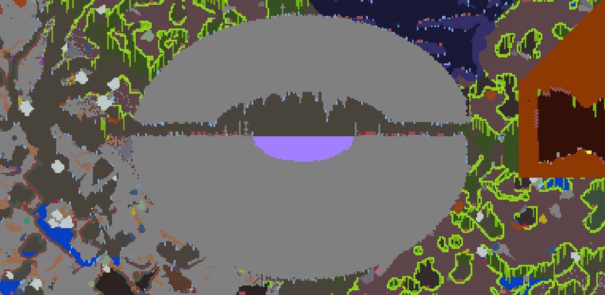

TerraMap
TerraMap泰拉瑞亚：如何找到微光
每个在 Terraria v1.4.4 或更高版本创建的世界里，都有一池微光，藏在一个叫“以太”的迷你生物群系中。 下面是它的生成规律，以及如何在你自己的世界地图上找到它。

以太会在哪里生成
- 在世界的丛林一侧，也就是地牢的对侧。
- 靠近世界边缘，通常在世界外侧五分之一的范围内。
- 在地下的洞穴地层，大约是世界高度一半的位置。
它是一个很大的椭圆形石洞，里面有宝石树，底部是一池微光。每个世界只有一个，所以在击败月亮领主之前， 这是你唯一能拿到的微光。
在 Terraria v1.4.4 之前创建的世界没有以太，已有的世界也不会补生成。你需要新建一个世界。
用 TerraMap 找到它
- 打开 TerraMap，用打开世界文件打开你的世界，或者把
.wld文件拖到页面上。不知道文件在哪？见世界文件保存在哪里。 - 按 Z（适应屏幕）看到整个世界。
- 按 D（前往地牢）确认地牢在哪一侧。以太在另一侧，和丛林同侧。
- 在地图那一侧的边缘附近、大约一半深度处，找一个灰色椭圆、中间有淡紫色水池的地方。TerraMap 把微光画成淡紫色，没有别的液体是这个颜色，所以即使缩得很小也很显眼。
- 用滚轮放大并点击水池。信息面板（I）会显示液体：微光以及水池的位置。
提示：TerraMap 显示位置的方式和游戏里的罗盘、深度计（或 GPS）一致，比如“西2300英尺, 374英尺 洞穴”，你可以直接挖到水池。
不想被剧透？用文件夹打开你的 Terraria 文件夹并选择一个角色，TerraMap 就只显示这个角色探索过的区域。
到了之后
跳进去要小心：泡在微光里会让你穿过方块往下掉。丢进微光的物品会被转化成别的物品，或者被拆解回制作材料。 Terraria Wiki 的微光页面列出了所有转化。